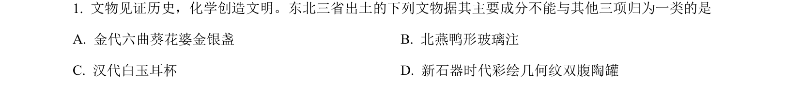
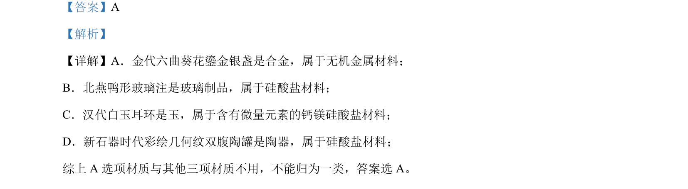

考点：无机非金属材料 硅酸盐材料 金属材料

该题考查依据材质对古代文物进行分类，识别金属材料与硅酸盐材料。

📄 原 PDF 第 1 页：
素材/真题/吉林/2008-2024·（吉林）化学高考真题/2024年高考化学试卷（辽宁）（解析卷）.pdf
【答案】A 【解析】 【详解】A．金代六曲葵花鎏金银盏是合金，属于无机金属材料； B．北燕鸭形玻璃注是玻璃制品，属于硅酸盐材料； C．汉代白玉耳环是玉，属于含有微量元素的钙镁硅酸盐材料； D．新石器时代彩绘几何纹双腹陶罐是陶器，属于硅酸盐材料； 综上 A 选项材质与其他三项材质不用，不能归为一类，答案选 A。